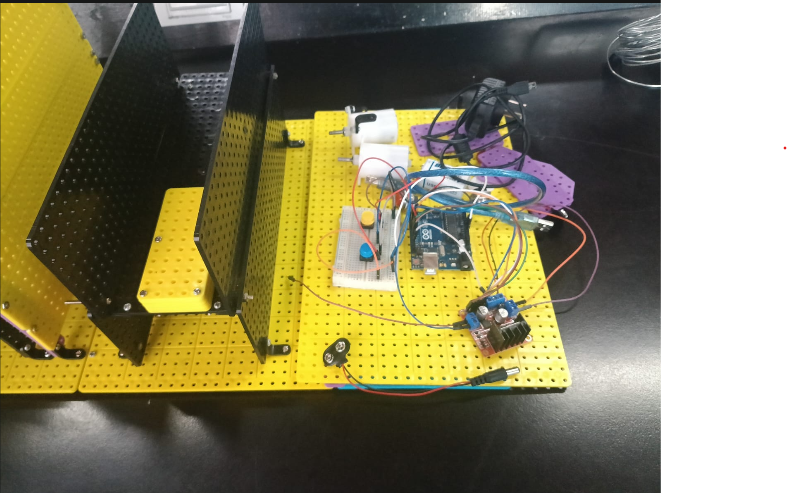
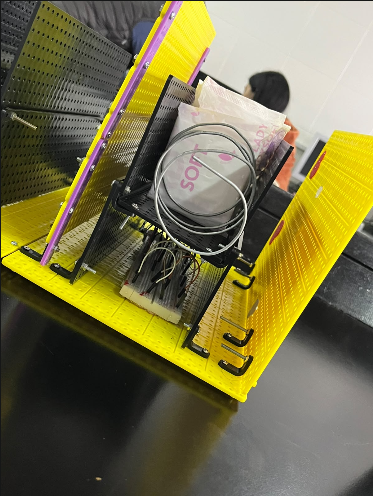
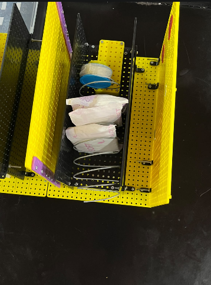
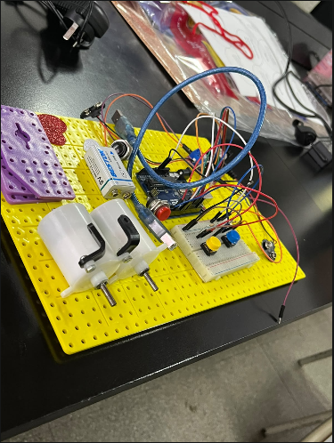
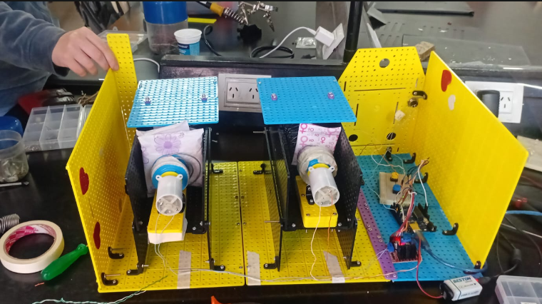
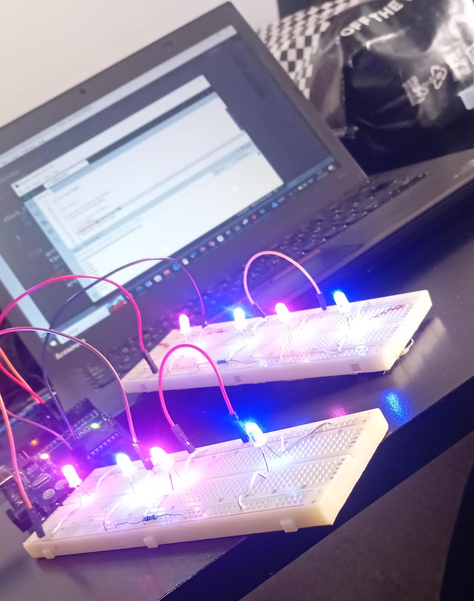

¿QUÉ ES UN ARDUINO?

El Arduino Uno es una placa electrónica programable que sirve para crear proyectos y controlar componentes electrónicos.
En palabras simples: es como una pequeña computadora que vos programás para que haga cosas.
PROYECTO DEL DISPENSER
(PARTE DE ARDUINO)
Esto es lo que hicieron sobre el dispenser de Arduino.

Este es el proceso de armado para probar, tocar el pulsador y que caiga la toallita femenina.


Luego de que funcionara el pulsador con el motor agregamos un puente H para programar el segundo motor, y así tenemos el dispenser de toallitas y el otro dispenser de protectores diarios.
Así quedó el proyecto final.
VIDEO DEL PROYECTO
COMPONENTES UTILIZADOS
Los componentes que utilizaron fueron:
- Un Arduino Uno
- Un puente H
- 2 resortes hechos con alambre galvanizado
- 8 LEDs
- 3 protoboards
- 2 botones
- Varios cables
- 2 motores de corriente continua (DC)
- Una batería de 9V
- Varias piezas de impresión 3D
- 2 resistencias
LED

Los 4 Leds se conectan para encenderse al mismo tiempo cuando se presiona el botón. Se utiliza una sola resistencia de 220 Ω conectada antes de los cuatro LEDs para limitar la corriente. Al presionar el botón, Arduino recibe la señal y activa los LEDs, haciendo que los cuatro se enciendan simultáneamente.